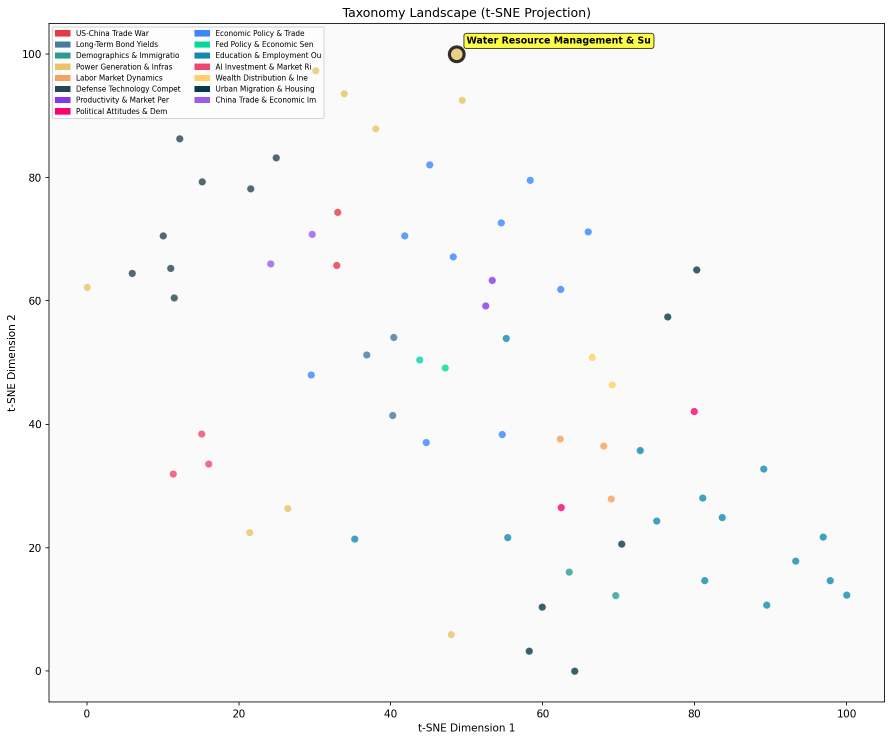

Description
This subcluster examines water scarcity, distribution challenges, and infrastructure responses across major economies. Articles analyze regional water depletion patterns, groundwater reserve decline, and climate-induced supply stress, particularly in the US Southwest and China. Content draws from federal analyses, economic impact assessments, and policy announcements regarding water allocation agreements and pricing mechanisms. Unlike sibling subclusters focused on energy production or technological breakthroughs, this cluster emphasizes resource constraints and adaptive management strategies, including massive infrastructure investments like China's Yarlung Tsangpo dam project that bridges water security with power generation objectives.
Similarity to All 70 Subclusters
Each cell represents a subcluster. Color intensity shows similarity (blue=low, red=high). Black line marks current subcluster position.
Relationship to Primary Clusters
Average similarity to each of the 15 primary clusters. Larger area = stronger relationship to that cluster.
Taxonomy Landscape
All 70 subclusters positioned by similarity (t-SNE). Current subcluster highlighted with label. Click to enlarge.
Network Connections
Current subcluster at center, connected to related subclusters. Line thickness = similarity strength.
Most Representative Articles
-
1. A @sffed analysis finds that US aggregate water resources were stable between 2003 and 2022, but Cal
-
2. Arizona, California, and Nevada have reached a three-year deal that will reduce water use from the C
-
3. The Colorado’s River’s flow has averaged less than 10M acre-feet a year in the past three years vs.
-
4. The Biden administration is likely to cut the water allocations of California, Arizona and Nevada by
-
5. Due to the rapidly dropping waters level of Lake Powell, the Glen Canyon (Hoover) Dam may have to be
Edge Cases (Boundary Articles)
-
1. Construction has started on a $167B (2.2% of China's 2024 GDP) Yarlung Tsangpo river dam. The projecThis article is borderline because while it involves water infrastructure (a massive dam project), the primary focus is on electricity generation capacity and economic impact rather than water scarcity, distribution challenges, or supply management issues that define the assigned cluster. The content aligns more closely with power generation and energy infrastructure investment, which explains its higher similarity to the Global Power Demand Growth & Investment Trends cluster.
-
2. The price of water in Arizona is rising. Some cities are finding the price per acre-foot has doubledThis article is borderline because while it mentions water pricing in Arizona, it focuses primarily on the economic/pricing aspect rather than the technical water resource management, infrastructure, or scarcity analysis that characterizes the cluster. The emphasis on price increases and market dynamics makes it more similar to affordability and pricing trend discussions than to water supply infrastructure or distribution challenges.
-
3. Both extreme droughts and periods of increased rainfall have increased in frequency over the 2002-20This article is borderline because while it mentions rainfall patterns that relate to water supply, it focuses primarily on documenting climate extremes (droughts and increased rainfall frequency) rather than examining the specific water management challenges, infrastructure responses, or distribution issues that define the assigned cluster. The content appears more aligned with climate pattern documentation, which explains its higher similarity to the ocean temperature and climate impact cluster.
Original Dendrogram